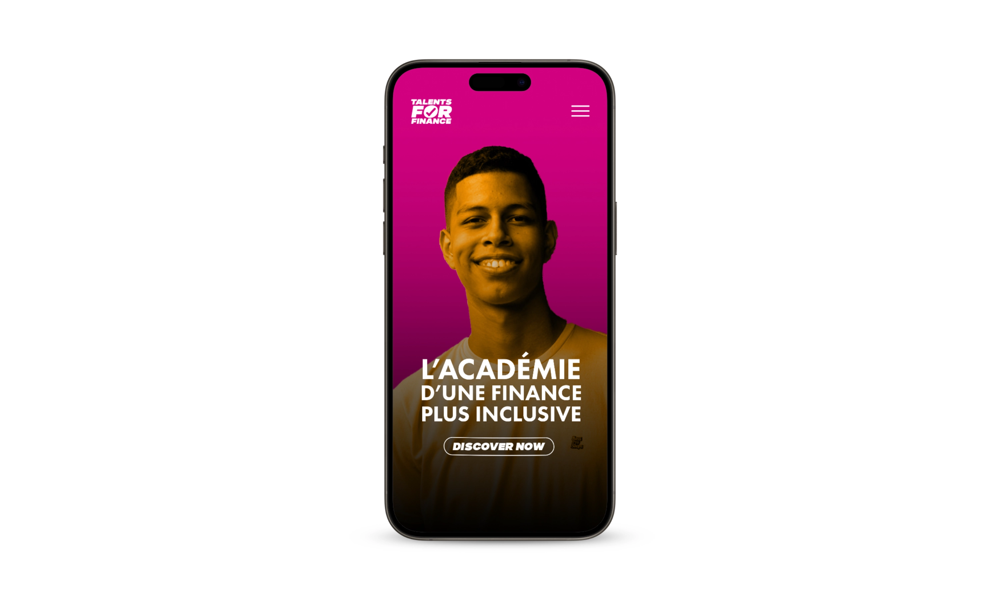
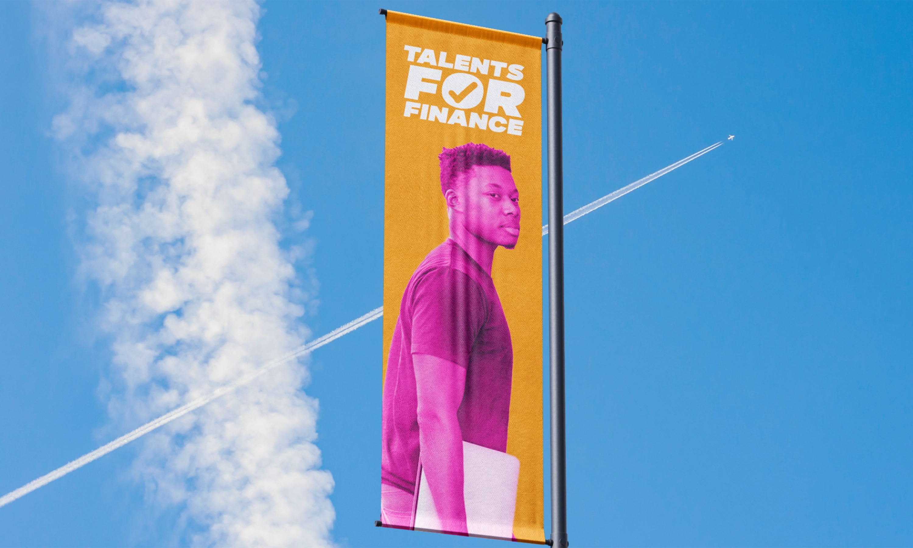
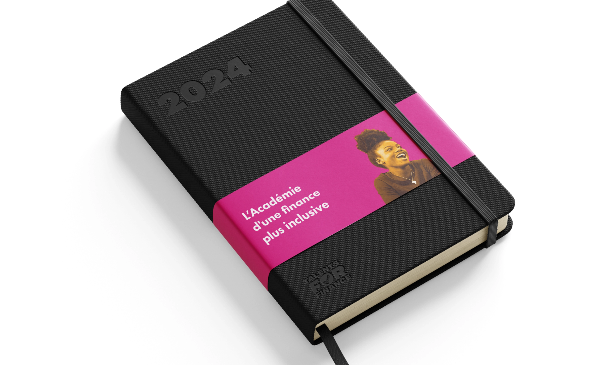
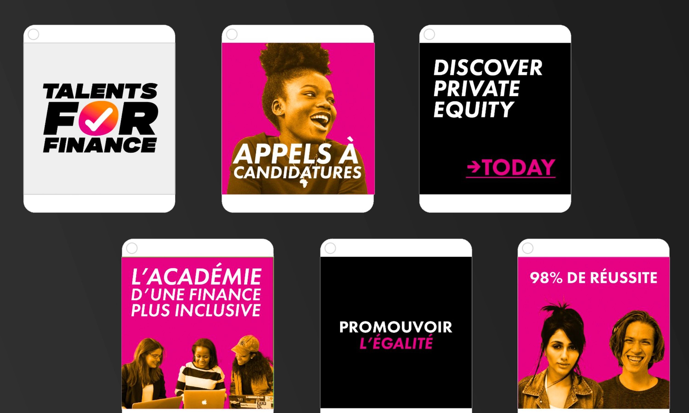

Talents for Finance
Branding & Webdesign
Discover the academy for more inclusive finance
Talents for Finance’s program selects 10 high school graduates coming from the French suburbs and countryside, and offers them an overview to jobs in the sector of finance, over a 2-year cycle..
A philanthropical project which I identify with
For designing this visual identity, my focus was on "diversity," "equal opportunities," "young visual codes," and "TikTok-friendly" elements. And for the website, this was my first time using Webflow, and it served as a great introduction to the tool for me.
Year
December 2024
Lire en Français 🇫🇷